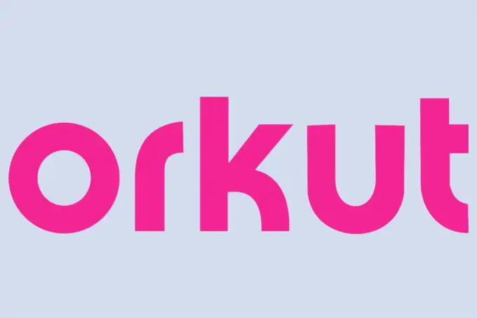

Orkut anuncia o retorno da rede social.
Antes de Facebook, Instagram e Twitter, a rede social que bombou mesmo aqui no Brasil foi o Orkut. Criada pelo engenheiro de software de origem turca Orkut Büyükkökten em 2004, ela teve mais de 300 milhões de usuários no auge. Foi desativada em 2014, quando já havia perdido boa parte do seu charme, como as comunidades e as correntes, com a popularização de outras plataformas.
Nesta quarta-feira, dia 27 de Abril, o site foi reativado e uma nova mensagem de seu fundador pode ser encontrada na página inicial.
"A melhor rede social é aquela que enriquece sua vida, mas não a manipula."
"Olá!
Sou o Orkut. 17 anos atrás eu criei uma pequena rede social enquanto eu trabalhava no Google como engenheiro de software. Em apenas alguns anos, essa rede social se tornou o orkut.com com mais de 300 milhões de usuários.
Acredito que o orkut.com encontrou sua comunidade porque reuniu tantas vozes diversas de todo o mundo em um só lugar. Trabalhamos muito para tornar o orkut.com uma comunidade onde o ódio e a desinformação não fossem tolerados. Nos dedicamos muito para tornar o orkut.com uma comunidade onde você pudesse conhecer pessoas reais que compartilhavam seus mesmos interesses, não apenas pessoas que curtiram e comentaram em suas fotos.
O mundo precisa de gentileza agora mais do que nunca. Há tanto ódio online nos dias de hoje, e nossas opções para encontrar e construir conexões reais são poucas e bem escassas. Sempre acreditei que uma amizade é mais do que um pedido de amizade, e dediquei minha vida para ajudar milhões de vocês a construir conexões autênticas com seus vizinhos, familiares, funcionários e os belos estranhos que entram em suas vidas.
Nossas ferramentas online devem nos servir, não nos dividir. Elas devem proteger nossos dados, não vendê-los. Elas devem nos dar esperança, não medo e ansiedade. A melhor rede social é aquela que enriquece sua vida, mas não a manipula. Eu quero que você seja capaz de ser o seu verdadeiro eu, online e offline. Eu quero que você seja capaz de fazer conexões duradouras. Eu quero ajudá-lo a fazer isso com todo o meu coração.
Eu sou uma pessoa otimista. Acredito no poder da conexão para mudar o mundo. Acredito que o mundo é um lugar melhor quando nos conhecemos um pouco mais. É por isso que criei a primeira rede social do mundo quando era estudante de pós-graduação em Stanford. É por isso que eu trouxe o orkut.com para tantos de vocês ao redor do mundo. E é por isso que estou construindo algo novo. Vejo você em breve!"
O otimismo de Orkut é verdadeiro. Ele afirma que criou sua rede social pensando em um ambiente livre de discursos de ódio. Na maior parte do tempo, o espaço era de fato mais seguro do que o que estamos acostumados hoje. A plataforma teve sua cota de polêmicas, mas o empreendedor tinha uma motivação benevolente de reunir as pessoas. Tanto que alguns anos após o fechamento do Orkut, em 2016, Büyükkökten lançou outra rede, Hello.
Com foco em smartphones, o objetivo da plataforma era reunir pessoas com gostos semelhantes. “As comunidades ofereciam às pessoas um espaço seguro para que elas se reunissem e dividissem seus interesses, sentimentos e paixões genuínas. Criamos toda a experiência de Hello em torno das comunidades”, disse o empreendedor na época. Mas a Hello não vingou. Em 2019, tinha apenas 1 milhão de usuários ativos, muito menos do que o Orkut. Ainda está ativa e seu principal mercado é a Índia.
Agora, a volta da popular rede social pode retomar parte desse antigo prestígio. A escolha do momento de divulgação não poderia ser mais oportuna: apenas dois dias após o anúncio de que Elon Musk compraria o Twitter. A promessa do bilionário dono da Tesla é criar um ambiente de neutralidade. “Para o Twitter merecer a confiança do público, ele deve ser politicamente neutro, o que efetivamente significa perturbar a extrema direita e a extrema esquerda igualmente”, escreveu ele. Mas especialistas acreditam que isso significa colocar informações sérias em pé de igualdade com teorias da conspiração, prejudicando o debate público.
Já Orkut quer ir na direção oposta. “Nossas ferramentas online devem nos servir, não nos dividir. Eles devem proteger nossos dados, não vendê-los. Eles devem nos dar esperança, não medo e ansiedade”, escreveu ele. Ainda é cedo para dizer exatamente o que ele pretende – e mesmo se o retorno do Orkut será uma realidade. Mas um ambiente relativamente seguro em que as pessoas se encontrem para discutir hobbies e gostos, e não defender suas crenças a qualquer custo, pode ser exatamente o que a internet precisa. E é por isso que usuários estão empolgados com a possibilidade.